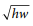

3x + 4y = -232y - x = -19
What is the solution (x, y) to the system of equations above?
A. (-5, -2) B. (3, -8) C. (4, -6) D. (9, -6)
b = 2.35 + 0.25xc = 1.75 + 0.40x
In the equations above, b and c represent the price per pound, in dollars, of beef and chicken, respectively, x weeks after July 1 during last summer. What was the price per pound of beef when it was equal to the price per pound of chicken?
A. $2.60 B. $2.85 C. $2.95 D. $3.35
x + y = -9x + 2y = -25
According to the system of equations above, what is the value of x ?
If 16 + 4x is 10 more than 14, what is the value of 8x ?
A. 2 B. 6 C. 16 D. 80
A food truck sells salads for $6.50 each and drinks for $2.00 each. The food truck’s revenue from selling a total of 209 salads and drinks in one day was $836.50. How many salads were sold that day?
A. 77 B. 93 C. 99 D. 105
The posted weight limit for a covered wooden bridge in Pennsylvania is 6000 pounds. A delivery truck that is carrying x identical boxes each weighing 14 pounds will pass over the bridge. If the combined weight of the empty delivery truck and its driver is 4500 pounds, what is the maximum possible value for x that will keep the combined weight of the truck, driver, and boxes below the bridge’s posted weight limit?
x + y = 03x - 2y = 10
Which of the following ordered pairs (x, y) satisfies the system of equations above?
A. (3, -2) B. (2, -2) C. (-2, 2) D. (-2, -2)
The graph of a line in the xy-plane has slope 2 and contains the point (1, 8). The graph of a second line passes through the points (1, 2) and (2, 1). If the two lines intersect at the point (a, b), what is the value of a + b ?
A. 4 B. 3 C. -1 D. -4
ax + by = 122x + 8y = 60
In the system of equations above, a and b are constants. If the system has infinitely many solutions, what is the value of a⁄b ?
A musician has a new song available for downloading or streaming. The musician earns $0.09 each time the song is downloaded and $0.002 each time the song is streamed. Which of the following expressions represents the amount, in dollars, that the musician earns if the song is downloaded d times and streamed s times?
A. 0.002d + 0.09s B. 0.002d - 0.09s C. 0.09d + 0.002s D. 0.09d - 0.002s
A worker uses a forklift to move boxes that weigh either 40 pounds or 65 pounds each. Let x be the number of 40-pound boxes and y be the number of 65-pound boxes. The forklift can carry up to either 45 boxes or a weight of 2,400 pounds. Which of the following systems of inequalities represents this relationship?
A. 40x + 65y ≤ 2,400
x + y ≤ 45
B. x⁄40 + y⁄65 ≤ 2,400
C. 40x + 65y ≤ 45
x + y ≤ 2,400
D. x + y ≤ 2,400
40x + 65y ≤ 2,400
In one semester, Doug and Laura spent a combined 250 hours in the tutoring lab. If Doug spent 40 more hours in the lab than Laura did, how many hours did Laura spend in the lab?
The number of states that joined the United States between 1776 and 1849 is twice the number of states that joined between 1850 and 1900. If 30 states joined the United States between 1776 and 1849 and x states joined between 1850 and 1900, which of the following equations is true?
A. 30x = 2 B. 2x = 30 C. x⁄2 = 30 D. x + 30 = 2
2x - 3y = -143x - 2y = -6
If (x, y) is a solution to the system of equations above, what is the value of x − y ?
A. -20 B. -8 C. -4 D. 8
kx - 3y = 44x - 5y = 7
In the system of equations above, k is a constant and x and y are variables. For what value of k will the system of equations have no solution?
A. 12⁄5 B. 16⁄7 C. -16⁄7 D. -12⁄5
In the xy-plane, the parabola with equation y = (x − 11)2 intersects the line with equation y = 25 at two points, A and B. What is the length of AB ?
A. 10 B. 12 C. 14 D. 16
At a lunch stand, each hamburger has 50 more calories than each order of fries. If 2 hamburgers and 3 orders of fries have a total of 1700 calories, how many calories does a hamburger have?
S(P) = (1⁄2)(P) + 40D(P) = 220 - P
The quantity of a product supplied and the quantity of the product demanded in an economic market are functions of the price of the product. The functions above are the estimated supply and demand functions for a certain product. The function S(P) gives the quantity of the product supplied to the market when the price is P dollars, and the function D(P) gives the quantity of the product demanded by the market when the price is P dollars.
At what price will the quantity of the product supplied to the market equal the quantity of the product demanded by the market?
A. $90 B. $120 C. $133 D. $155
The sum of three numbers is 855. One of the numbers, x, is 50% more than the sum of the other two numbers. What is the value of x ?
A. 570 B. 513 C. 214 D. 155
Mr. Kohl has a beaker containing n milliliters of solution to distribute to the students in his chemistry class. If he gives each student 3 milliliters of solution, he will have 5 milliliters left over. In order to give each student 4 milliliters of solution, he will need an additional 21 milliliters. How many students are in the class?
A. 16 B. 21 C. 23 D. 26
3x + b = 5x - 73y + c = 5y - 7
In the equations above, b and c are constants. If b is c minus 1⁄2 , which of the following is true?
A. x is y minus 1⁄4 B. x is y minus 1⁄2 C. x is y minus 1 D. x is y plus 1⁄2
y ≤ -15x + 3000y ≤ 5x
In the xy-plane, if a point with coordinates (a, b) lies in the solution set of the system of inequalities above, what is the maximum possible value of b ?
x⁄y = 64(y + 1) = x
If (x, y) is the solution to the system of equations above, what is the value of y ?
A. 2 B. 4 C. 12 D. 24
-3x + 4y = 206x + 3y = 15
If (x, y) is the solution to the system of equations above, what is the value of x ?
The monthly membership fee for an online television and movie service is $9.80. The cost of viewing television shows online is included in the membership fee, but there is an additional fee of $1.50 to rent each movie online. For one month, Jill’s membership and movie rental fees were $12.80. How many movies did Jill rent online that month?
A. 1 B. 2 C. 3 D. 4
One of the requirements for becoming a court reporter is the ability to type 225 words per minute. Donald can currently type 180 words per minute, and believes that with practice he can increase his typing speed by 5 words per minute each month. Which of the following represents the number of words per minute that Donald believes he will be able to type m months from now?
A. 5 + 180m B. 225 + 5m C. 180 + 5m D. 180 − 5m
Last week Raul worked 11 more hours than Angelica. If they worked a combined total of 59 hours, how many hours did Angelica work last week?
A. 24 B. 35 C. 40 D. 48
Mr. Martinson is building a concrete patio in his backyard and deciding where to buy the materials and rent the tools needed for the project. The table below shows the materials’ cost and daily rental costs for three different stores.
The total cost, y, for buying the materials and renting the tools in terms of the number of days, x, is given by y = M + (W + K)x.
For what number of days, x, will the total cost of buying the materials and renting the tools from Store B be less than or equal to the total cost of buying the materials and renting the tools from Store A ?
A. x ≤ 6 B. x ≥ 6 C. x ≤ 7.3 D. x ≥ 7.3
The function f(x) = x3 - x2 - x - 11⁄4 is graphed in the xy-plane above. If k is a constant such that the equation f(x) = k has three real solutions, which of the following could be the value of k ?
A. 2 B. 0 C. -2 D. -3
In a study of bat migration habits, 240 male bats and 160 female bats have been tagged. If 100 more female bats are tagged, how many more male bats must be tagged so that 3⁄5 of the total number of bats in the study are male?
Jackie has two summer jobs. She works as a tutor, which pays $12 per hour, and she works as a lifeguard, which pays $9.50 per hour. She can work no more than 20 hours per week, but she wants to earn at least $220 per week. Which of the following systems of inequalities represents this situation in terms of x and y, where x is the number of hours she tutors and y is the number of hours she works as a lifeguard?
A. 12x + 9.5y ≤ 220
x + y ≥ 20
B. 12x + 9.5y ≤ 220
x + y ≤ 20
C. 12x + 9.5y ≥ 220
D. 12x + 9.5y ≥ 220
y = x22y + 6 = 2(x + 3)
If (x, y) is a solution of the system of equations above and x > 0, what is the value of xy ?
A. 1 B. 2 C. 3 D. 9
Alan drives an average of 100 miles each week. His car can travel an average of 25 miles per gallon of gasoline. Alan would like to reduce his weekly expenditure on gasoline by $5. Assuming gasoline costs $4 per gallon, which equation can Alan use to determine how many fewer average miles, m, he should drive each week?
A. (25⁄4)m = 95 B. (25⁄4)m = 5 C. (4⁄25)m = 95 D. (4⁄25)m = 5
(1⁄2)(2x + y) = 21⁄2y = 2x
The system of equations above has solution (x, y). What is the value of x ?
An online bookstore sells novels and magazines. Each novel sells for $4, and each magazine sells for $1. If Sadie purchased a total of 11 novels and magazines that have a combined selling price of $20, how many novels did she purchase?
A. 2 B. 3 C. 4 D. 5
(1⁄2)y = 4x - (1⁄2)y = 2
A. 3 B. 7⁄2 C. 4 D. 6
A landscaper is designing a rectangular garden. The length of the garden is to be 5 feet longer than the width. If the area of the garden will be 104 square feet, what will be the length, in feet, of the garden?
If x = (2⁄3)y and y = 18, what is the value of 2x − 3 ?
A. 21 B. 15 C. 12 D. 10
If ab⁄4 = 16 for positive integers a and b, what is one possible value of b ?
Between 1497 and 1500, Amerigo Vespucci embarked on two voyages to the New World. According to Vespucci’s letters, the first voyage lasted 43 days longer than the second voyage, and the two voyages combined lasted a total of 1,003 days. How many days did the second voyage last?
A. 460 B. 480 C. 520 D. 540
7x + 3y = 86x - 3y = 5
For the solution (x, y) to the system of equations above, what is the value of x - y ?
A. -4⁄3 B. 2⁄3 C. 4⁄3 D. 22⁄3
An architect wants to use the riser-tread formula to design a stairway with a total rise of 9 feet, a riser height between 7 and 8 inches, and an odd number of steps. With the architect’s constraints, which of the following must be the tread depth, in inches, of the stairway? (1 foot = 12 inches)
A. 7.2 B. 9.5 C. 10.6 D. 15
A group of friends decided to divide the $800 cost of a trip equally among themselves. When two of the friends decided not to go on the trip, those remaining still divided the $800 cost equally, but each friend’s share of the cost increased by $20. How many friends were in the group originally?
x = y - 3x⁄2 + 2y = 6
Which ordered pair (x, y) satisfies the system of equations shown above?
A. (-3, 0) B. (0, 3) C. (6, -3) D. (36, -6)
Marisa needs to hire at least 10 staff members for an upcoming project. The staff members will be made up of junior directors, who will be paid $640 per week, and senior directors, who will be paid $880 per week. Her budget for paying the staff members is no more than $9,700 per week. She must hire at least 3 junior directors and at least 1 senior director. Which of the following systems of inequalities represents the conditions described if x is the number of junior directors and y is the number of senior directors?
A. 640x + 880y ≥ 9,700
x + y ≤ 10
x ≥ 3
y ≥ 1
B. 640x + 880y ≤ 9,700
x + y ≥ 10
C. 640x + 880y ≥ 9,700
x ≤ 3
y ≤ 1
D. 640x + 880y ≤ 9,700
A software company is selling a new game in a standard edition and a collector’s edition. The box for the standard edition has a volume of 20 cubic inches, and the box for the collector’s edition has a volume of 30 cubic inches. The company receives an order for 75 copies of the game, and the total volume of the order to be shipped is 1,870 cubic inches. Which of the following systems of equations can be used to determine the number of standard edition games, s, and collector’s edition games, c, that were ordered?
A. 75 - s = c
20s + 30c = 1,870
B. 75 - s = c
30s + 20c = 1,870
C. s - c = 75
25(s + c) = 1,870
D. s - c = 75
If a − b = 12 and b⁄2 = 10, what is the value of a + b ?
A. 2 B. 12 C. 32 D. 52
The formulas above are used in medicine to estimate the body surface area A, in square meters, of infants and children whose weight w ranges between 3 and 30 kilograms and whose height h is measured in centimeters.
If Mosteller’s and Current’s formulas give the same estimate for A, which of the following expressions is equivalent to  ?
A. (4 + w) / 2 B. (4 + w) / 1,800 C. 2(4 + w) D. (4 + w)2 / 2
The score on a trivia game is obtained by subtracting the number of incorrect answers from twice the number of correct answers. If a player answered 40 questions and obtained a score of 50, how many questions did the player answer correctly?
The width of a rectangular dance floor is w feet. The length of the floor is 6 feet longer than its width. Which of the following expresses the perimeter, in feet, of the dance floor in terms of w ?
A. 2w + 6 B. 4w + 12 C. w2 + 6 D. w2 + 6w
y > 2x − 12x > 5
Which of the following consists of the y-coordinates of all the points that satisfy the system of inequalities above?
A. y > 6 B. y > 4 C. y > 5⁄2 D. y > 3⁄2
A group of 202 people went on an overnight camping trip, taking 60 tents with them. Some of the tents held 2 people each, and the rest held 4 people each. Assuming all the tents were filled to capacity and every person got to sleep in a tent, exactly how many of the tents were 2-person tents?
A. 30 B. 20 C. 19 D. 18
-x + y = -3.5x + 3y = 9.5
If (x, y) satisfies the system of equations above, what is the value of y ?
Two types of tickets were sold for a concert held at an amphitheater. Tickets to sit on a bench during the concert cost $75 each, and tickets to sit on the lawn during the concert cost $40 each. Organizers of the concert announced that 350 tickets had been sold and that $19,250 had been raised through ticket sales alone. Which of the following systems of equations could be used to find the number of tickets for bench seats, B, and the number of tickets for lawn seats, L, that were sold for the concert?
A. (75B)(40L) = 1,950
B + L = 350
B. 40B + 75L = 19,250
C. 75B + 40L = 350
B + L = 19,250
D. 75B + 40L = 19,250
Roberto is an insurance agent who sells two types of policies: a $50,000 policy and a $100,000 policy. Last month, his goal was to sell at least 57 insurance policies. While he did not meet his goal, the total value of the policies he sold was over $3,000,000. Which of the following systems of inequalities describes x, the possible number of $50,000 policies, and y, the possible number of $100,000 policies, that Roberto sold last month?
A. x + y < 57
50,000x + 100,000y < 3,000,000
B. x + y > 57
50,000x + 100,000y > 3,000,000
C. x + y < 57
D. x + y > 57
In the xy-plane, the equations x + 2y = 10 and 3x + 6y = c represent the same line for some constant c. What is the value of c ?